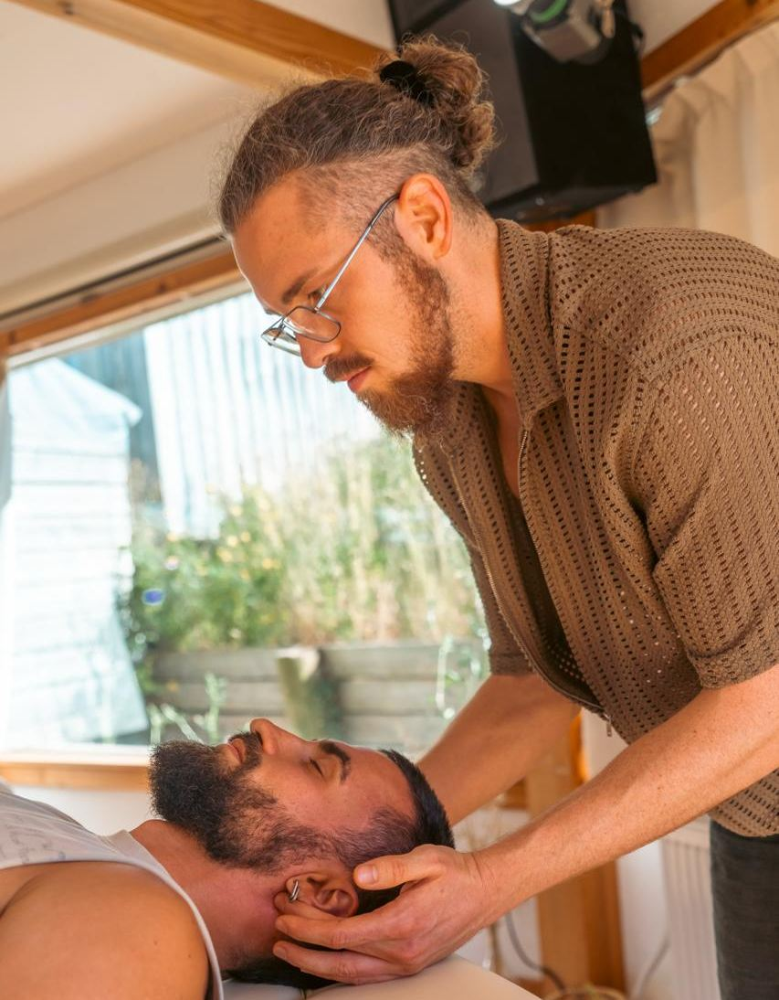

„Ich begleite dich zurück in deinen Körper, um das zu fühlen, was du zu lange runtergeschluckt hast.“
Du hast alles verstanden.
Und trotzdem ändert sich nichts.
- Außen läuft es. Innen bist du taub oder einfach müde.
- Du zeigst dich genau so weit, wie es sicher ist.
- Und irgendwo drunter: „Mit mir stimmt was nicht.“
Das ist keine Schwäche. Das ist Scham — und sie tut nur ihren alten Job: dich schützen. Sie darf jetzt etwas Neues lernen.
Es beginnt mit einer Session.

1:1 Session
Neo Emotional Release: Atem, Druckpunkte, meine Stimme. Du musst nichts erklären und nichts richtig machen.
Und danach, wenn es passt

Einzelbegleitung
Mehrere Monate an deiner Seite. Darüber reden wir, wenn du meine Arbeit erlebt hast.

Retreat
Ein paar Tage in der Gruppe — für alle, die schon eine Session mit mir hatten.
„Es war eine der besten Entscheidungen meines Lebens.“
Lieber erst mal zuhören?
Gespräche mit Franz auf Spotify ↗Ich kenne Scham nicht aus Büchern.
Kleinmachen, verstecken, gegen das eigene Gefühl anarbeiten — das war jahrelang mein Normalzustand. Heute begleite ich Menschen genau dorthin, wo es weich wird.
„Dieser verurteilungsfreie Raum mit Franz ist unglaublich wertvoll und wichtig für mich.“
Lern mich erst mal kennen.
Gespräche mit Franz
Über Scham, Körper und alles, was sonst niemand ausspricht.
Auf Spotify anhören ↗ Playlist · baldUnVerschämt tanzen
Meine Playlist zum Schütteln, Stampfen und Loslassen.
Mehr dazu → Meditation · baldEmotional-Release-Meditation
Zwanzig Minuten mit meiner Stimme. Für zu Hause.
Mehr dazu →„Ich fühle mich stärker denn je und bin unfassbar stolz und beeindruckt von mir selbst!“
Lass uns reden.
30 Minuten, kostenlos, unverbindlich. Danach weißt du, ob eine Session für dich passt.
Lieber schreiben? ↓
Design-Vorschau: Dieses Formular versendet noch nichts.
Neo Emotional Release ist Prozess- und Persönlichkeitsarbeit — keine Therapie und kein Heilversprechen. In akuten Krisen: Notruf 112 · Telefonseelsorge 0800 111 0 111.